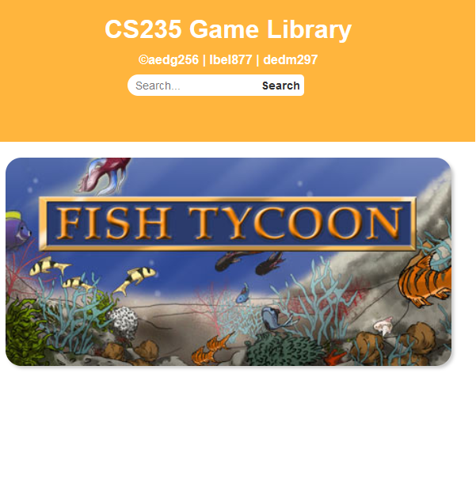
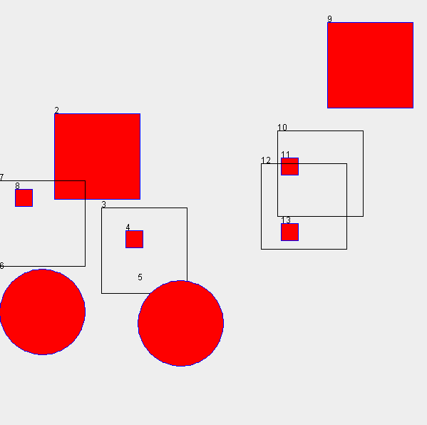
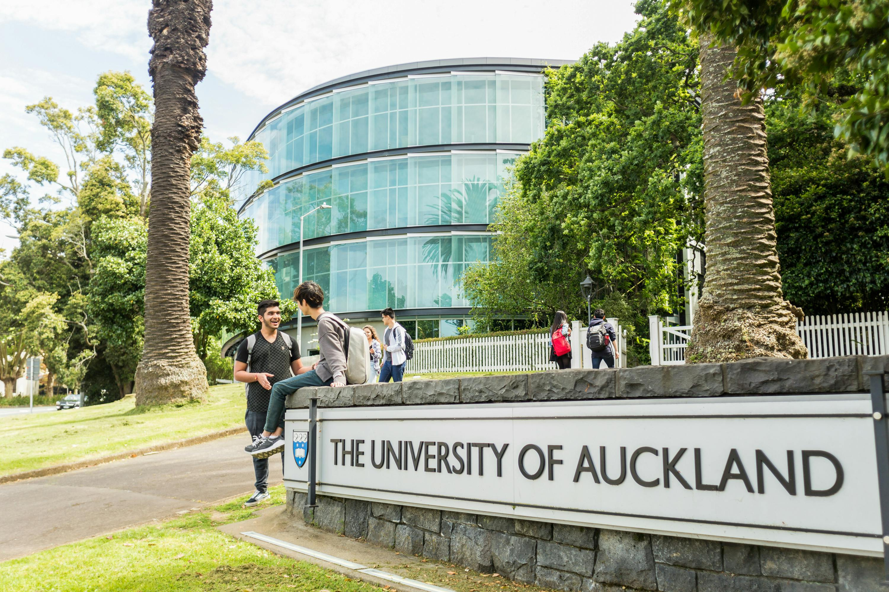
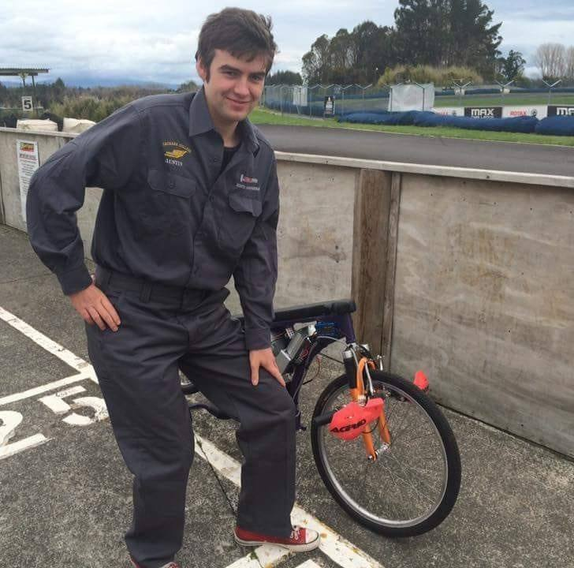
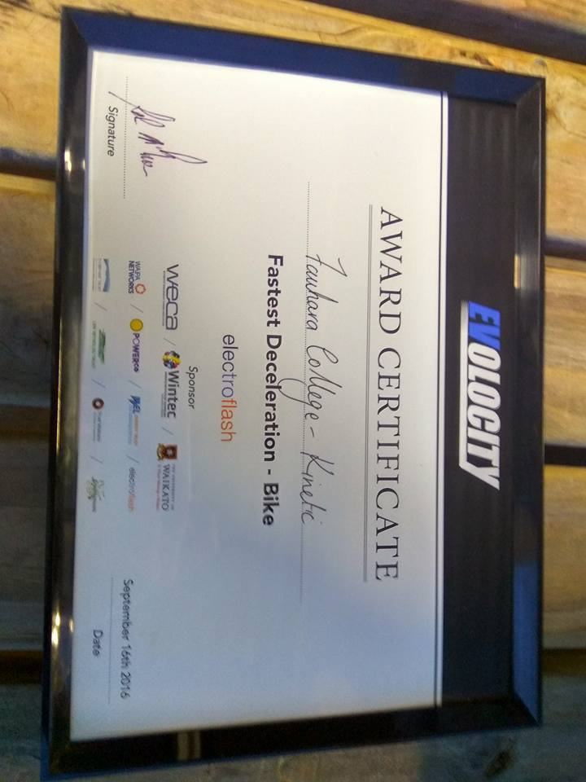
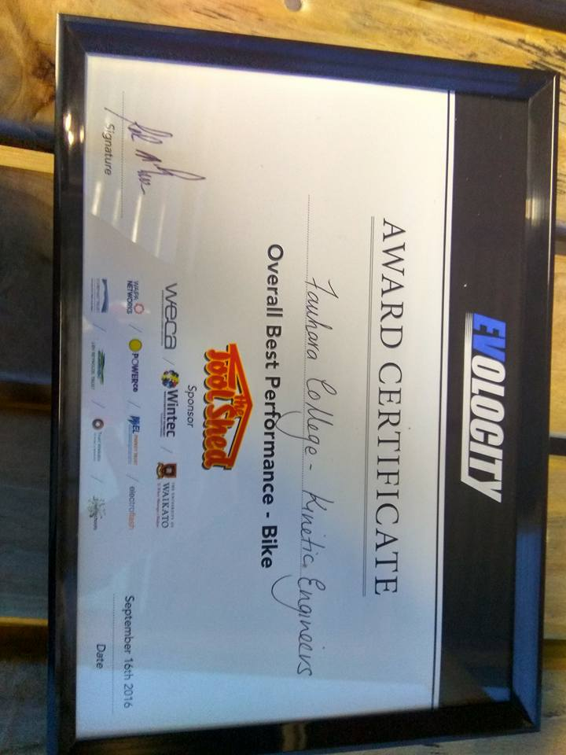

My Journey
Campus Maps
2024
Worked with a team to create a University of Auckland Campus map mobile application for a client, applying university-acquired skill to deliver a successful project
Project Management, Leadership, Teamwork, Conflict Resolution, UI/UX Design, Frontend Development, Client Interaction, Communication, Stakeholder Management
Real-Time Chat Application
2023
Developed a real-time chat application using React and Firebase. Enabled users to sign in with their Google accounts and engage in live chat conversations. Utilized Firebase Realtime Database to store and synchronize messages across all connected clients, ensuring seamless and up-to-date communication.
React, Firebase, API Integration, Database Management, Authentication
Concert Booking Service
2022
Developed a web application for managing bookings at a small venue with 120 seats, categorized into Silver, Gold, and Platinum price bands. Enabled clients to view concert details, make reservations, and check seat availability. Implemented features to prevent double bookings and ensure complete seat reservation. Designed the system to handle high loads during peak ticket sales and provide scalability for future growth.
Java, Spring Boot, REST API, Database Management, Authentication, Testing

University of Auckland Class Representative
2022
I was elected to be a class representative for two of my classes. In this role, I acted as a mediator between the students and the teaching staff, ensuring that complaints were heard and that good feedback was collected.
Leadership, Communication
Games WebApp
2021
Developed a Flask-based web application for an interactive gaming platform. The application showcases game-related information retrieved from a domain model, allowing users to explore various games
Python, Flask, MySQLS

University of Auckland
2021
Graduated with degrees in Economics and Film, Media, and Television. Decided to further my education by pursuing advanced studies in Computer Science and Information Management to combine analytical skills with technical expertise, and to explore innovative solutions in the digital and data-driven world.
Harvard's CS50x
2020
During the first COVID lockdown period, I decided to take Harvard's CS50x course. During this course, we made several small projects while learning the foundations of programming.
C, CSS, HTML, JavaScript, Python, Flask, MySQLS
Bouncing Shapes
2019
Developed a Java program featuring a graphical interface with bouncing shapes in a JFrame. The application supports complex, nested shapes for an engaging visual experience. Implemented a JTree to manage the shape hierarchy, integrated event listeners for user interactions, and created a GUI for controlling animation.
Java, Object Oriented Programming, GUI, Animation

University of Auckland
2019
Pursuing a dual degree in Economics and Film, Media, and Television. Developed analytical skills and economic insight while also gaining a deep understanding of media production, storytelling, and digital content creation. This diverse educational background enhances my ability to analyze complex data and create compelling media projects.

Evolocity Competition
2016
Competed as part of a team in a competition to design and build an electric bike from scratch. Our project won an award for Best User Engagement, showcasing our ability to create an innovative, user-focused solution.
Engineering Design, Project Management, Innovation, User Experience (UX) Design
 

Electronic Engineering
2016-2018
Completed high school coursework in electronic engineering, where I designed and built a light-sensing remote-controlled car. Gained hands-on experience in circuit design, component integration, and practical problem-solving.